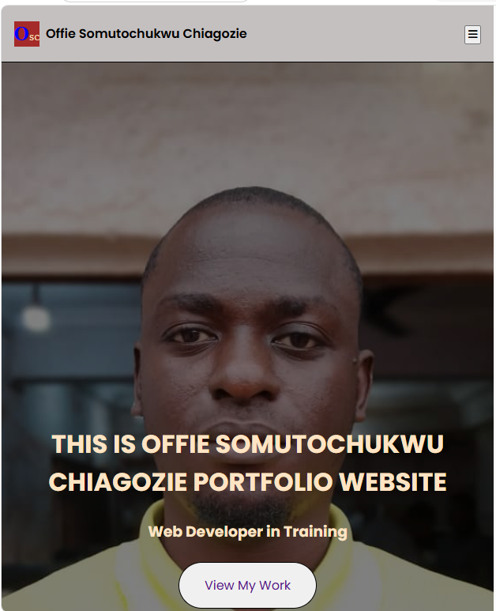
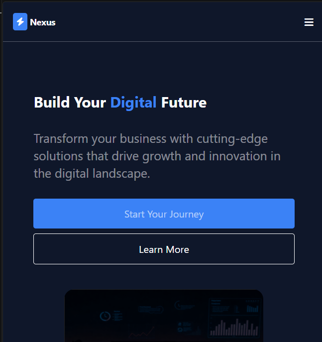
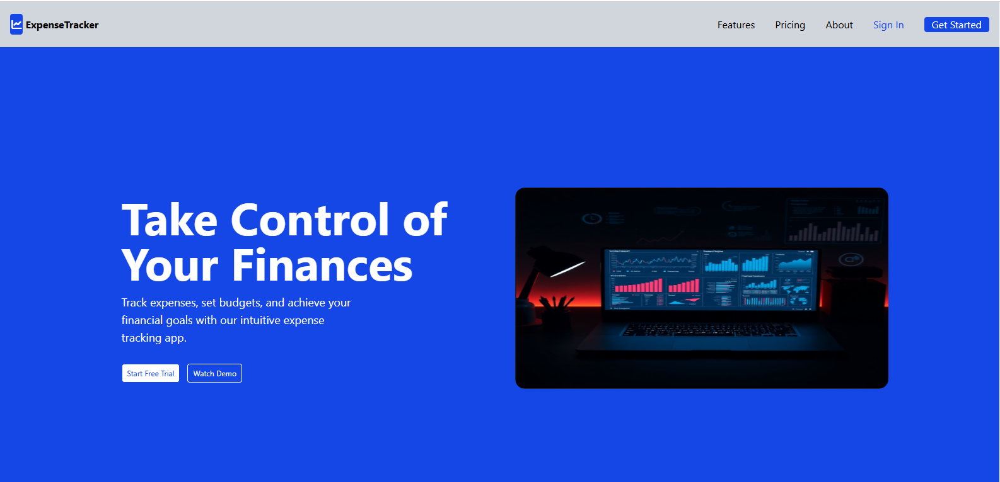

PROJECTS

Personal Profile
Technology: HTML
In this personal project, i built a simple single-page personal profile page using only HTML. The goal is to demonstrate my understanding of the core HTML concepts covered in class sections. I created a personal profile, with a navigation sidebar, multiple content sections, and a properly structured table.
Technologies and ProcressI built my personal profile sidebar using a nav, unordered list, and anchor tag. I used section and paragraphs while building the body. I Inserted a properly structured table, a simple form and finally a footer.

LifeCare Health Centre
Technology: HTML
I built a page for a fictional community health clinic called LifeCare Health Centre. This project focuses on structuring health information in a clear, accessible, and professional way using only HTML.
Technologies and ProcressI used Semantic HTML,unordered list and anchor tag on the menu bar. Its a multiple page HTML only page. A well arranged table, using col-span was used on the doctors table. A well arranged form for appointments booking form. Semantic HTML "article" was used in the Health tips section.

Portfolio Profile
Technology: HTML, CSS
I created a single-page, media responsive landing-page professional personal portfolio site that showcases who i am, my skills, and my journey as a web developer.
Technologies and ProcressI used a header, navigation, unordered list and anchor tag on the menu bar. A hamburger bar was used on making the menu bar more media responsive for screen sizes less than 768px. I built an about section using flex and grid, a simple skill section using flex with hover effect and a project section built using grid. A simple contact form and a simple footer.
E-Commerce Site
Technology: HTML, CSS
I created a modern e-commerce landing page showcasing products for sale. This is a multiple page product showcase site. Which focus on making products look appealing and creating an enjoyable browsing experience.
Technologies and ProcressI used a header, nav, unordered list and anchor tag on the menu bar. A hamburger bar was used on making the menu bar more media responsive. The feature section and product section was built using grid.

Nexus Landing Page
Technology: HTML, Tailwind CSS
I built a nexus landing page using Tailwind CSS & HTML. This project was to duplicate a page format, make it come to live and media responsive to all screen sizes.
Technologies and ProcressThis landing page was a duplication of an already existing page/format. Colours where applied using themes from the input file. A well responsive menu bar screen for all screen sizes, a feature and about section was built using flex/grid. A form section and a simple footer.

ExpenseTracker Landing Page
Technology: HTML, Tailwind CSS
I built a ExpenseTracker landing page using Tailwind CSS & HTML. This project was to duplicate a page format, make it come to live and media responsive to all screen sizes.
Technologies and ProcressThis landing page was a duplication of an already existing page/format. A well responsive menu bar screen for all screen sizes, a feature and about section was built using flex/grid. A simple footer.